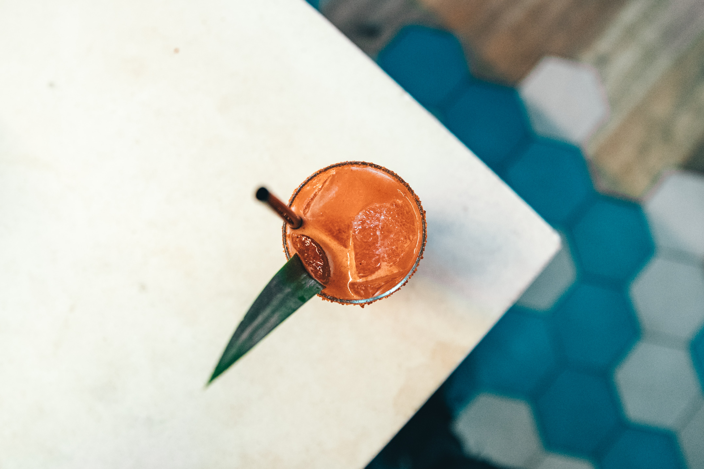

Taku was founded in the summer of 2022. We are a family/minority owned Taqueria & Mezcaleria serving food deeply rooted in Sinaloan ritual. We serve corn and flour tortillas - all made by hand. The corn tortillas are nixtamalized in house from corn sourced from small producers in Oaxaca and Puebla. Our specialty flour tortillas are made in house and rolled by hand daily. The meats and seafood are expertly butchered in house daily.


123 Main Street
Baltimore, MD 21212
444-444-4444
info@info,com